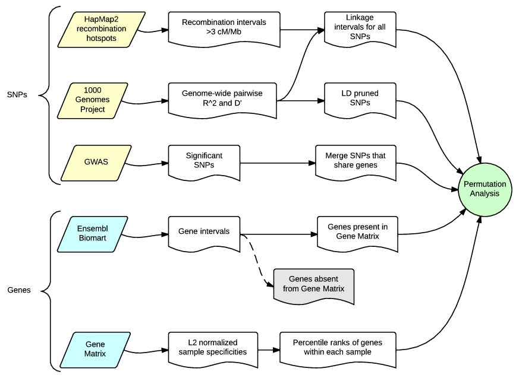
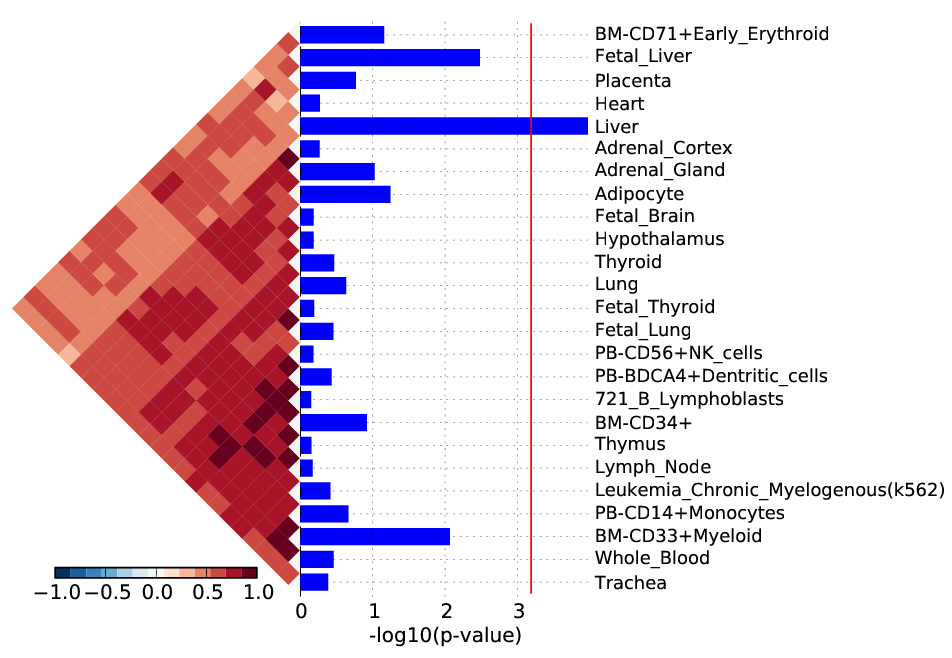
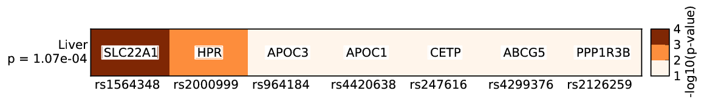
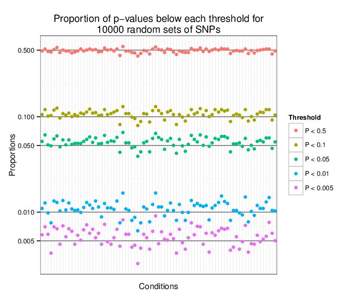

Introduction
SNPsea is a nonparametric permutation analysis originally conceived to test for enrichment of sample-specific expression of genes in loci near trait-associated SNPs.
The implementation described here is generalized, so you may provide a quantitative gene matrix with gene expression (or any other measurements) or a binary gene matrix with presence absence (1, 0) values. The columns of the matrix might be tissues, cell types, GO annotation codes, or any other types of conditions. In general, this analysis is appropriate when you are interested in testing for enrichment of sample-specificity of genes linked to a given set of trait-associated SNPs.
Genome-wide association analyses have identified disease and trait loci across the genome, thereby implicating many nearby linked genes.
The following hypothesis is tested by this analysis:
If trait-associated alleles impact a small number of pathogenic tissues or cell types, then the subset of genes with critical functions in those pathogenic cell types are likely to be within trait-associated loci.
We assume that a gene's specificity to a given condition is a reasonable indicator of the gene's importance to the function of that condition.
Please see the following publications for additional information outside the scope of this reference manual:
Slowikowski, K. et al. SNPsea: test trait-associated loci for enrichment of condition-specificity of gene measurements or binary annotations. Manuscript in progress.
Hu, X. et al. Integrating autoimmune risk loci with gene-expression data identifies specific pathogenic immune cell subsets. The American Journal of Human Genetics 89, 496–506 (2011). PubMed
Contact
Please contact me with questions and comments:
Visual Summary
Flow Chart

This flow chart shows the input data required to perform the analysis, and a summary of the intermediate steps.
Installation
First, install the dependencies listed below. Then run:
cd snpsea/src
makeYou may move the generated executable file wherever you like:
mv snpsea/bin/snpsea ~/bin/Data
Download the compressed archive with data required to perform this analysis here:
Contents:
GO2013.gct.gz
ImmGen2012.gct.gz
LDL_Teslovich2010.txt
Lango2010.txt.gz
NCBIgenes2013.bed.gz
NovartisGeneAtlas2004.gct.gz
TGP2011.bed.gzGO2013.gct.gz
A GCT formatted gene matrix with 1s and 0s indicating presence or absence of 19,111 genes in 1,751 Gene Ontology annotations.
ImmGen2012.gct.gz
Gene expression data for 15,139 genes across 249 blood cell types from GSE15907. Replicates for each cell type were averaged. For each gene, the single probe with the largest minimum was selected.
Immunological Genome Project. http://www.immgen.org/
LDL_Teslovich2010.txt
37 SNPs taken from:
Teslovich TM, Musunuru K, Smith AV, et al. Biological, clinical and population relevance of 95 loci for blood lipids. Nature. 2010;466(7307):707-13. PubMed
Lango2010.txt.gz
A list of 56,890 SNPs pruned by linkage disequilibrium that span the whole genome. Null SNP sets matched on the number of genes in the user's SNP set are sampled from this list. See this paper for more information:
Lango allen H, Estrada K, Lettre G, et al. Hundreds of variants clustered in genomic loci and biological pathways affect human height. Nature. 2010;467(7317):832-8. PubMed
NCBIgenes2013.bed.gz
40,437 Gene coordinates were obtained from the NCBI. The coordinates I provide are a subset of those listed in gene2refseq.gz.
NovartisGeneAtlas2004.gct.gz
Gene expression data for 17,581 genes across 79 human tissues from GSE1133. Replicates for each tissue were averaged. For each gene, the single probe with the largest minimum was selected.
Su AI et al. A gene atlas of the mouse and human protein-encoding transcriptomes. Proc Natl Acad Sci U S A, 2004 Apr 9;101(16):6062-7
TGP2011.bed.gz
Linkage intervals for a filtered set of 22,518,294 SNPs from the 1000 Genomes Project Phase 1 (May 21, 2011). SNP genotypes were obtained from the BEAGLE release v3 website and processed to create linkage intervals for each SNP. The linkage intervals were extended to the nearest HapMap recombination hotspot with >3 cM/Mb recombination rate.
C++ Libraries
Eigen is a C++ template library for linear algebra: matrices, vectors, numerical solvers, and related algorithms.
Instructions: Download the latest version and unpack it. Ensure the SNPsea Makefile points to the folder that contains eigen.
MPI is a standardized API typically used for parallel and/or distributed computing. Open MPI is an open source, freely available implementation.
Instructions: Install on Ubuntu with:
sudo apt-get install libopenmpi-devThe GNU Scientific Library (GSL) is a numerical library for C and C++ programmers.
Instructions: Install on Ubuntu with:
sudo apt-get install libgsl0-devI use c++0x features in my C++ code, so you must use a compiler that supports them. I compiled successfully with versions 4.6.3 and 4.8.1.
Python Packages
To plot visualizations of the results, you will need Python 2.7 and the packages listed below. Note: the packages available on the Ubuntu repositories may be outdated and might fail to work.
Instructions: Install with pip:
pip install numpy pandas matplotlibNumPy is the fundamental package for scientific computing with Python.
pandas is an open source, BSD-licensed library providing high-performance, easy-to-use data structures and data analysis tools for the Python programming language.
matplotlib is a python 2D plotting library which produces publication quality figures in a variety of hardcopy formats and interactive environments across platforms.
R Packages
Some visualizations use R and ggplot2 instead of Python and matplotlib.
Instructions: Start a session in R and run:
install.packages(c("data.table", "reshape2", "gap", "ggplot2"))Extension of data.frame for fast indexing, fast ordered joins, fast assignment, fast grouping and list columns.
Flexibly reshape data: a reboot of the reshape package.
Genetic analysis package.
An implementation of the Grammar of Graphics.
Usage
Example
Here is a Bash script with a usage example:
options=(
--snps LDL_Teslovich2010.txt
--gene-matrix NovartisGeneAtlas2004.gct.gz
--gene-intervals NCBIgenes2013.bed.gz
--snp-intervals TGP2011.bed.gz
--null-snps Lango2010.txt.gz
--out out
--slop 250e3
--threads 4
--null-snpsets 1e3
--min-observations 50
--max-iterations 1e6
)
snpsea ${options[*]} > log.txtThis will run the analysis on SNPs associated with LDL cholesterol and test for tissue-specific expression of the nearby genes across 79 human tissues in the Novartis 2011 gene expression matrix. Additionally, 1000 null random matched SNP sets will be tested and their results will also be recorded. Each tissue will be tested up to 1 million times, or testing will stop for a tissue if 50 matched SNP sets are observed to achieve a higher specificity score than the user's SNPs.
Options
All input files may be optionally compressed with gzip.
Required
--snps ARG Text file with SNP identifiers in the first
column. Instead of a file name, you may use
'randomN' with an integer N for a random SNP list
of length N.
--gene-matrix ARG Gene matrix file in GCT format. The Name column
must contain the same gene identifiers as in
--gene-intervals.
--gene-intervals ARG BED file with gene intervals. The fourth column
must contain the same gene identifiers as in
--gene-matrix.
--snp-intervals ARG BED file with all known SNP intervals. The fourth
column must contain the same SNP identifiers as
in --snps and --null-snps.
--null-snps ARG Text file with names of SNPs to sample when
generating null matched or random SNP sets.
These SNPs must be a subset of --snp-intervals.
--out ARG Create output files in this directory. It will be
created if it does not already exist.Optional
--condition ARG Text file with a list of columns in --gene-matrix
to condition on before calculating p-values. Each
column in --gene-matrix is projected onto each
column listed in this file and its projection is
subtracted.
--slop ARG If a SNP interval overlaps no gene intervals,
extend the SNP interval this many nucleotides
further and try again.
[default: 250000]
--threads ARG Number of threads to use.
[default: 1]
--null-snpsets ARG Test this many null matched SNP sets, so you can
compare your results to a distribution of null
results.
[default: 10]
--min-observations ARG Stop testing a column in --gene-matrix after
observing this many null SNP sets with
specificity scores greater or equal to those
obtained with the SNP set in --snps. Increase
this value to obtain more accurate p-values.
[default: 25]
--max-iterations ARG Maximum number of null SNP sets tested for each
column in --gene-matrix. Increase this value to
resolve smaller p-values.
[default: 1000]Input File Formats
--snps ARG
You must provide one or more comma-separated text files. SNP identifiers must be listed one per line. Only the first column is used.
head LDL_Teslovich2010.txt
rs11136341 chr8 145043543
rs3757354 chr6 16127407
rs12027135 chr1 25775733
rs217386 chr7 44600695
rs1169288 chr12 121416650
rs7225700 chr17 45391804
rs2479409 chr1 55504650
rs247616 chr16 56989590
rs2954022 chr8 126482621
rs1564348 chr6 160578860Instead of providing a file with SNPs, you may use "randomN" like this:
--snps random20to sample 20 random SNPs from the --snp-intervals file.
--gene-matrix FILE
You must provide a single gene matrix that must be in GCT format.
zcat NovartisGeneAtlas2004.gct.gz | cut -f1-4 | head
#1.2
17581 79
Name Description Colorectal_Adenocarcinoma Whole_Blood
1 A1BG 115.5 209.5
2 A2M 85 328.5
9 NAT1 499 1578
10 NAT2 115 114
12 SERPINA3 419.5 387.5
13 AADAC 125 252.5
14 AAMP 2023 942.5--condition FILE (Optional)
You may provide column names present in the --gene-matrix file, one per line. The matrix will be conditioned on these columns before the analysis is performed to help you identify secondary signals independent of these columns. Binary (0, 1) matrices will not be conditioned.
head conditions.txt
Whole_Blood--gene-intervals FILE
You must provide gene intervals in BED format with a fourth column that contains the same gene identifiers as those present in the Name column of the --gene-matrix GCT file. Only the first four columns are used.
zcat NCBIgenes2013.bed.gz | head
chr1 10003485 10045555 64802 NMNAT1
chr1 100111430 100160096 54873 PALMD
chr1 100163795 100164756 100129320 HMGB3P10
chr1 100174205 100232185 391059 FRRS1
chr1 10027438 10027515 100847055 MIR5697
chr1 100308165 100308317 100270894 RPL39P9
chr1 100315632 100389578 178 AGL
chr1 100433941 100435837 730081 LOC730081
chr1 100435344 100492534 23443 SLC35A3
chr1 100503669 100548932 64645 HIAT1--snp-intervals FILE
SNP linkage intervals must be specified in BED format and include a fourth column with the SNP identifiers. The linkage intervals assigned to the trait-associated SNPs you provide with --snps are taken from this file.
zcat TGP2011.bed.gz | head
chr1 0 254996 rs113759966
chr1 0 254996 rs114420996
chr1 0 254996 rs114608975
chr1 0 254996 rs115209712
chr1 0 254996 rs116400033
chr1 0 254996 rs116504101
chr1 0 254996 rs12184306
chr1 0 254996 rs12184307
chr1 0 254996 rs138808727
chr1 0 254996 rs139113303--null-snps FILE
The null SNPs file must have one SNP identifier per line. Only the first column is used. The identifiers must be a subset of the identifiers in --snp-intervals.
zcat Lango2010.txt.gz | head
rs58108140 chr1 10583
rs180734498 chr1 13302
rs140337953 chr1 30923
rs141149254 chr1 54490
rs2462492 chr1 54676
rs10399749 chr1 55299
rs189727433 chr1 57952
rs149755937 chr1 59040
rs77573425 chr1 61989
rs116440577 chr1 63671Output Files
The usage example shown above produces the following output files:
out/
args.txt
pvalues.txt
null_pvalues.txt
snp_genes.txt
snp_pvalues.txtargs.txt
The command line arguments needed to reproduce the analysis.
cat args.txt
snpsea --snps LDL_Teslovich2010.txt
--gene-matrix NovartisGeneAtlas2004.gct.gz
--gene-intervals NCBIgenes2013.bed.gz
--snp-intervals TGP2011.bed.gz
--null-snps Lango2010.txt.gz
--out out
--slop 250000
--threads 4
--null-snpsets 1000
--min-observations 50
--max-iterations 1000000pvalues.txt
The p-values representing enrichment of sample-specificity for the given SNPs.
head pvalues.txt | column -t
name pvalue nulls_observed nulls_tested
ColorectalAdenocarcinoma 0.87 87 100
WholeBlood 0.00606299 77 12700
BM-CD33+Myeloid 0.054 81 1500
PB-CD14+Monocytes 0.316667 95 300
PB-BDCA4+Dentritic_Cells 0.164286 115 700
PB-CD56+NKCells 0.000104993 86 819100null_pvalues.txt
If the argument for --snps is the name of a file, the p-values for null matched SNP sets. You can compare these null results to the results for your trait-associated SNPs.
If the argument for --snps is "randomN" where N is some integer, like "random20" the p-values for random unmatched SNP sets, each with N SNPs.
The fifth column is the replicate index. The number of replicates performed is specified with --null-snpsets INT.
head null_pvalues.txt | column -t
ColorectalAdenocarcinoma 0.056 84 1500 0
WholeBlood 0.236667 71 300 0
BM-CD33+Myeloid 0.55 55 100 0
PB-CD14+Monocytes 0.59 59 100 0
PB-BDCA4+Dentritic_Cells 0.59 59 100 0
PB-CD56+NKCells 0.71 71 100 0
PB-CD4+Tcells 0.383333 115 300 0
PB-CD8+Tcells 0.128571 90 700 0
PB-CD19+Bcells 0.168571 118 700 0
BM-CD105+Endothelial 0.386667 116 300 0snp_genes.txt
Each SNP's linkage interval and overlapping genes. If a SNP is not found in the reference file specified with --snp-intervals, then the name of the SNP will be listed and the other columns will contain NA.
head snp_genes.txt | column -t
chrom start end name n_genes genes
chr7 128560761 128773770 rs10488631 2 3663,23534
chr2 100637056 100895271 rs10865035 3 3899,150577,164832
chr11 118475098 118746223 rs10892279 2 1656,23187
NA NA NA rs99999999 NA NA
chr21 43817297 43851877 rs11203203 1 53347
chr1 117256697 117293763 rs11586238 4 914,965,3321,5738
chr1 161389417 161637888 rs12746613 5 2212,2213,2215,3310,9103
chr2 61068167 61382443 rs13031237 5 5194,5966,84542,339803,339804
chr3 58553160 58558769 rs13315591 1 11170snp_pvalues.txt
Each SNP, sample, gene with greatest specificity to that sample, and p-value for the SNP-sample pair, adjusted for the number of genes overlapping the given SNP.
head snp_pvalues.txt | column -t
marker column gene pvalue
rs10488631 ColorectalAdenocarcinoma 3663 0.270409
rs10488631 WholeBlood 3663 0.302693
rs10488631 BM-CD33+Myeloid 3663 0.0569547
rs10488631 PB-CD14+Monocytes 3663 0.0960891
rs10488631 PB-BDCA4+Dentritic_Cells 3663 0.240571
rs10488631 PB-CD56+NKCells 23534 0.58674
rs10488631 PB-CD4+Tcells 3663 0.683486
rs10488631 PB-CD8+Tcells 23534 0.634216
rs10488631 PB-CD19+Bcells 3663 0.261931Output Visualizations
View enrichment of tissue-specific gene expression

Create this visualization with:
python bin/barplot.py --out outView the most specifically expressed gene for each SNP-tissue pair

Create this visualization with:
python bin/heatmap.py --out outView the type 1 error rate estimates for each tissue

Create this visualization with:
Rscript bin/type1error.R out